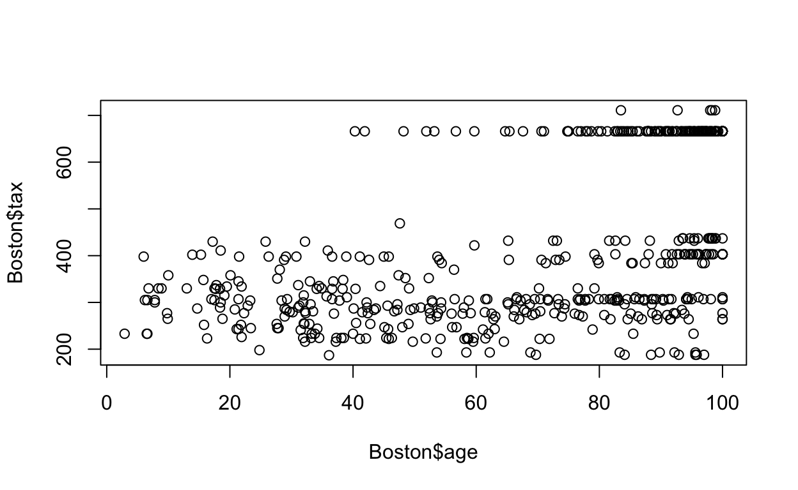
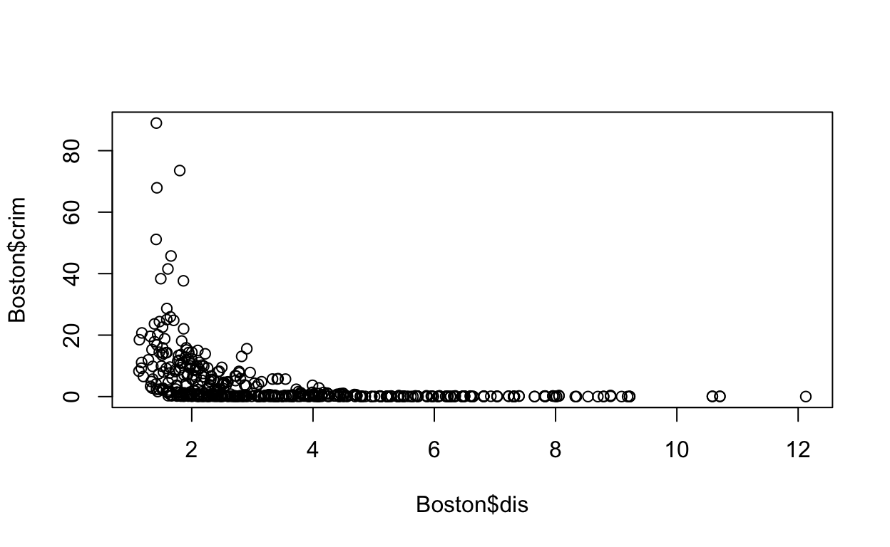
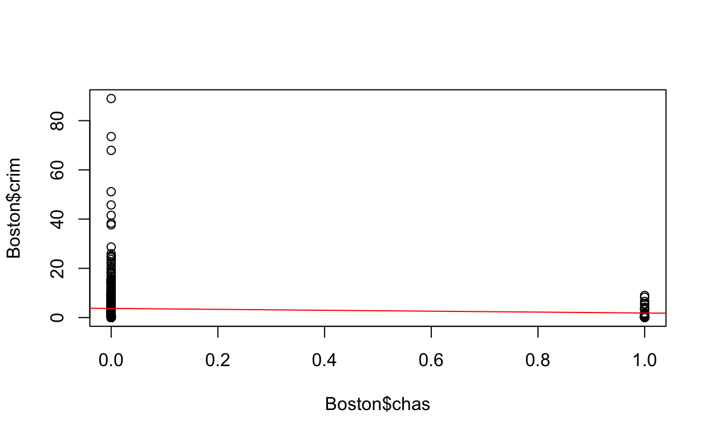
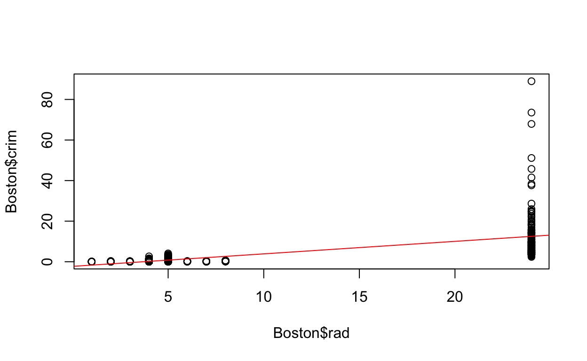
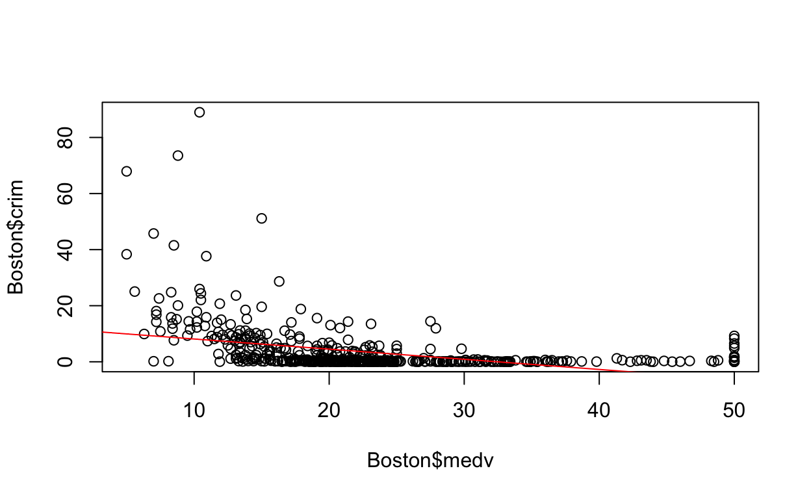

ISLR Ch. 3, exercise 3
Some collaboration with (Jason, Dana, Ben, and Larri)
Ch. 2 exercise 1
(a)
Question: The sample size n is extremely large, and the number of predictors p is small.
Answer: You would expect a flexible statistical learning method to perform better when the sample size is larger, this is because a flexible model will fit the data more closely, in addition estimating more parameters could risk overfitting, but because the number of predictors is small this could not be an issue so a flexible model will simply the the larger number of available point more effectively without as much risk of facing dimensionality constraints as it is likely that a small number of araeters would not make the calculation of distance between points too difficult.
(b)
Question: The number of predictors p is extremely large, and the number of observations n is small.
Answer: If the number of predictors is extremely large then a less flexible model will perform better than a more flexible one. This is because a larger number of predictors for small number of observations can lead to overfitting and an excess sensitivity towards points that could be outliers. In the case of a large number predictors a more flexible model would include more and thus because of the small number of actual observations it would be difficult to determine what the smallest distance is in any dimension as described in the curse of dimensionslity. In this case a less flexible model will use less predictors and thus wont face the difficulties in calculating the closest point in a large number of dimensions.
(c)
Question: The relationship between the predictors and response is highly non-linear.
Answer: If the relationship between predictors and response is highly non-linear than a more flexible model will likely make predictions in a way that is more accurate than extremely inflexible models like linear regression. Flexible models are generally nonlinear and account for more predictors than extremely inflexible models by nature. As a result a correctly defined flexible model could be effective at describing a non-linear relationship, especially if its predictors are used and defined in a way that does not overfit certain predictors over others.
(d)
Question: The variance of the error terms, i.e.sigma2 = Var(error), is extremely high.
Answer: As in previous cases, extremely flexible models risks overfitting data too closely. If the variance in error is quite large then there is a greater potential that in making predictions, a more flexible model will overfit points that vary a great amount from the true relationship. In essence fit patterns in the training data that may not be replicated in the test data that are the result of variance in the error of predictions. A dataset that has a large amount of variance will likely have large errors that flexible methods will overfit to. As a result inflexible models will likely make better predictions when variance is large because the model will not fit errors closely.
Ch. 2 exercise 2
Problem: Explain whether each scenario is a classification or regression problem, and indicate whether we are most interested in inference or prediction. Finally, provide n and p.
(a)
Question: We collect a set of data on the top 500 firms in the US. For each firm we record profit, number of employees, industry and the CEO salary. We are interested in understanding which factors affect CEO salary.
Answer: This problem is a regression problem, we are attempting to predict variations in CEO salary given a number of inputs. Salary itself is a continuous measurement in dollars and does not belong to a particular classification group. Here we are interested in inference, as the problem state we want to know which factors affect CEO salary rather than predicting what a CEOs salary is. n = 500 (number of firms)
p = 3 (profit, number of employees, industry)
(b)
Question: We are considering launching a new product and wish to know whether it will be a success or a failure. We collect data on 20 similar products that were previously launched. For each product we have recorded whether it was a success or failure, price charged for the product, marketing budget, competition price, and ten other variables.
Answer: classification, here we are trying to determine success or failure given a number of inputs and not measuring any kind of continuous variable, here we want to categorize outcomes as 1 of 2 binary outcomes either failure, or success.
n = 20 (Similar Products)
p = 13 (price, marketing budget, competition price, 10 more)
(c)
Question: We are interested in predicting the % change in the USD/Euro exchange rate in relation to the weekly changes in the world stock markets. Hence we collect weekly data for all of 2012. For each week we record the % change in the USD/Euro, the % change in the US market, the % change in the British market, and the % change in the German market.
Answer: This is a regression problem, the exchange rate is observed in relation to other inputs but the rate itself is a continuous numeric value that is being measured in relation to other non-categorical, continous variables.
n = 52 (Weekly data, 52 weeks in a year) p = 3 (the % change in the US market, the % change in the British market, and the % change in the German market)
Ch. 2 exercise 7
Question: Describe the differences between a parametric and a non-parametric statistical learning approach. What are the advantages of a para- metric approach to regression or classification (as opposed to a non- parametric approach)? What are its disadvantages? The table below provides a training data set containing six observations, three predictors, and one qualitative response variable.
(a)
Question: Compute the Euclidean distance between each observation and the test point,X1 =X2 =X3 =0.
Answer: The test point here is X1=X2=X3=0 or (0, 0, 0) Euclidean distance is a difference between magnitude vectors
Sqrt(sum(qi-pi)2)
The first is Red with distance:
sqrt((0-0)^2+(3-0)^2+(0-0)^2) %>% kable()
| x |
|---|
| 3 |
The Second is Red with distance:
sqrt((2-0)^2+(0-0)^2+(0-0)^2) %>% kable()
| x |
|---|
| 2 |
The Third is Red with distance:
sqrt((0-0)^2+(1-0)^2+(3-0)^2) %>% kable()
| x |
|---|
| 3.162278 |
The fourth is Green with distance:
sqrt((0-0)^2+(1-0)^2+(2-0)^2) %>% kable()
| x |
|---|
| 2.236068 |
The Fifth is Green with distance:
sqrt( (-1-0)^2+(0-0)^2+(1-0)^2 ) %>% kable()
| x |
|---|
| 1.414214 |
The sixth is Red with distance:
sqrt((1-0)^2+(1-0)^2+(1-0)^2) %>% kable()
| x |
|---|
| 1.732051 |
(b)
Question: What is our prediction with K = 1? Why?
Answer: The nearest neighbor classifier is Pr( y = j | x = x0 ) = 1/K * sum ( yi= j ) and i in N0 so we have 1/1 * (yi = j) here we look to 1 nearest neighbor in this case it is from (0, 0, 0) to the nearest single point, this is when we have observation 5 as it has the smallest euclidean distance at 1.414214. Because of this for 1 nearest neighbor we would predict the point to be Green.
(c)
Answer: What is our prediction with K = 3?
Why? Pr( y = j | x = x0 ) = 1/K * sum ( yi= j ) and i in N0 Pr( y = j | x = x0 ) = 1/3 * sum ( yi=j )
and i in N0 our 3 nearest neighbors here are
1.414214 = Green
1.732051 = Red
2 = Red
so in this case we have a 2/3 probability of the point being red as 2/3 of its nearest points are red. Finally it has a 1/3 probability of being green as 1/3 of the nearest points to (x1=0, x2=0, x3=0) is green.
(d)
Question: If the Bayes decision boundary in this problem is highly nonlinear, then would we expect the best value for K to be large or small? Why?
Answer: If the decision boundary is highly nonlinear than we want a more fleixable K value as an inflexible K-value will result in a boundary that is more linear in appearance. Instead it would be better to use a smaller K-value which determines points by a smaller number of neighbors. In this case if a boundary is further from linear we would expect a more nonlinear decision making boundary to predict our points better. This is because the K-value determines the number of local points used to determine the classification of a point so if the true relationship is determinant on a large number of parameters then is beneficial to allow the algoithm to account for a larger amount of paramteres and thus variation itself.
Ch. 2 exercise 10
(a)
Question: How many rows are in this data set? How many columns? What do the rows and columns represent?
nrow(Boston) %>% kable()
| x |
|---|
| 506 |
Answer: The number of rows in the dataset is 506
ncol(Boston) %>% kable()
| x |
|---|
| 13 |
Answer:The number of columns in the dataset is 13
The rows in the Boston dataset represent census tracts in the city of Boston. Each column is an observation for an individual census tract for 13 different categories including crime rate, nitrus oxide concentration, average age, and a number of other indicators describing each census tract.
(b)
Question: Make some pairwise scatterplots of the predictors (columns) in this data set. Describe your findings.
Answer: Plot 1. my first graph represents the relationship between non-retail acres of industry in the census tract and crime rate. In this case it does not appear as if there is any noticable association between the two variables as around a indus level of 18 there is a large variation in crime rate.
plot( Boston$indus, Boston$crim)
Answer: Plot 2. The second plot below graphs crime rate as a function of nitrus oxide concentration in each census tract. Here there does appear to be some association between the two as increasing the level of nox past 0.5 appears to be associated with a larger variation in crime rate.
plot(Boston$nox, Boston$crim)
Answer: Plot 3. The next plot compares average age in a census tract to the tax rate there. Here there does no appear to be a strong association between the two variables, at least linearly, looking at taxes above and below 500 does indicate that people that are, on average, older than others tend to be associated with areas with higher taxes.
plot(Boston$age, Boston$tax)

Answer: Plot 4. The plot below looks at the association between nitrus oxicide concentration and average number of rooms per dwelling, there does not appear to be any direct association as there is a great deal of variation with most points centering around 6 rooms without too much association though there are some areas with low nox and many rooms and some with high nox and few rooms.
plot(Boston$rm, Boston$nox)
Answer: Plot 5. The graph below plots the association between the tax rate of a town, or census tract, and the pupil-teacher ratio there. In this case there does not appear to be a strong association between the two as the points are distributed fairly evenly between 14-20 on the ptratio y-axis and 200-400 on the tax-rate x-axis.
plot(Boston$tax, Boston$ptratio)
Answer: Plot 6. The final plot below looks at the association between median value of occupied homes in the 1000s and lstat, or proportion of people that are lower status in the community. In this case there does appear to be some negative association between increasing levels or lower status and lower house prices.
plot(Boston$lstat, Boston$medv)
(c)
Question: Are any of the predictors associated with per capita crime rate? If so, explain the relationship.
Answer: Below I have began by using the pairs function to look for association between per-capita crime rate and each of the other predictors. This is represented by the graphs in the first column under crim
It appears as if none of the variables in this fist pairs() plot are associated with crime rate.
In this second set of graphs there does appear to be an association in some way with nox, but it is difficult to distinguish a relationship for the other variables.
In the 3rd set of graphs it only appears that dis has an association with crime rate.
In the final graph indicates an association between lstat and medv and crime. From the appearance of these graphs it would seem that: nox in the second panels graphs dis in the third panels graphs medv, stat in the fourth panels graphs
plot(Boston$nox, Boston$crim)

plot(Boston$dis, Boston$crim)

plot(Boston$medv, Boston$crim)
plot(Boston$lstat, Boston$crim)
Answer: The relationship between nox and crime appears to indicate that there begins to be an association between increased nox and crime above 0.5 of nox. The relationship between dis and crim appears to be that crime is much higher, on average closer to employment centers and gradually falls as the town is further away.
The relationship between medv and crim appears to be that as medv, or median value of occupied homes increases there appears to be an association with decreasing crime rates.
Finally the association between lstat and crim indicates that as lstat or percent of lower status people increaes the crime rate increases as well.
(d)
Question: Do any of the census tracts of Boston appear to have particularly high crime rates? Tax rates? Pupil- teacher ratios? Comment on the range of each predictor.
hist(Boston$crim, breaks=75, probability = TRUE)
quantile(Boston$crim)
0% 25% 50% 75% 100%
0.006320 0.082045 0.256510 3.677083 88.976200 count(Boston[Boston$crim > 3.677083,])
n
1 127Based on the information in the first code chunk there do appear to be some tracts with particularly high crime rates. In this case the histogram indicates that most area have low crime but that there are some areas with far higher rates. To find out how many area had quite high crime rates I looked at observations in crime over the 75th quantile and found 127 census tracts with larger amounts of crime than 75 quaniles of the data.
hist(Boston$tax, breaks=50, probability = TRUE)
quantile(Boston$tax)
0% 25% 50% 75% 100%
187 279 330 666 711 count(Boston[Boston$tax > 666,])
n
1 5Based on the information in the above code chunk there do appear to be some census tracts with an exceptionally high tax rate. As seen in the histogram property taxes for many towns are between 200 and 550, however a larger number of census tracts have higher property taxes. Again I looked for how many areas were above the 75th quantile of the data and found that only 5 town had a propoerty tax over 666.
hist(Boston$ptratio, breaks=75, probability = TRUE)

quantile(Boston$ptratio) %>% kable()
| x | |
|---|---|
| 0% | 12.60 |
| 25% | 17.40 |
| 50% | 19.05 |
| 75% | 20.20 |
| 100% | 22.00 |
count(Boston[Boston$ptratio > 20.20,]) %>% kable()
| n |
|---|
| 56 |
Finally I looked at the number of census tracts with exceptionally high pupil to student ratios, there appear to be a number of towns with higher ratios, in this case there were 56 census tracts with over the 75th quantile of students per-teacher.
(e)
Question:How many of the census tracts in this data set bound the Charles river?
Answer: Based on the code below it appears that 35 census tracts in the dataset bound the charles river as the chas column indicates with 1 being that the area does bound the charles and 0 being that it does not.
count(Boston[Boston$chas == 1,]) %>% kable()
| n |
|---|
| 35 |
(f)
Question: What is the median pupil-teacher ratio among the towns in this data set?
Answer: The median pupul-teacher ratio, indicated by the ptratio column of the dataset is calculated below as 19.05.
median(Boston$ptratio) %>% kable()
| x |
|---|
| 19.05 |
(g)
Question Which census tract of Boston has lowest median value of owner occupied homes? What are the values of the other predictors for that census tract, and how do those values compare to the overall ranges for those predictors? Comment on your findings.
colrange <-function(x){ sapply(x,range)
}
colrange(Boston) %>% kable()
| crim | zn | indus | chas | nox | rm | age | dis | rad | tax | ptratio | lstat | medv |
|---|---|---|---|---|---|---|---|---|---|---|---|---|
| 0.00632 | 0 | 0.46 | 0 | 0.385 | 3.561 | 2.9 | 1.1296 | 1 | 187 | 12.6 | 1.73 | 5 |
| 88.97620 | 100 | 27.74 | 1 | 0.871 | 8.780 | 100.0 | 12.1265 | 24 | 711 | 22.0 | 37.97 | 50 |
(Boston[order(Boston$medv),])[1,] %>% kable()
| crim | zn | indus | chas | nox | rm | age | dis | rad | tax | ptratio | lstat | medv | |
|---|---|---|---|---|---|---|---|---|---|---|---|---|---|
| 399 | 38.3518 | 0 | 18.1 | 0 | 0.693 | 5.453 | 100 | 1.4896 | 24 | 666 | 20.2 | 30.59 | 5 |
summary(Boston[399,]) %>% kable()
| crim | zn | indus | chas | nox | rm | age | dis | rad | tax | ptratio | lstat | medv | |
|---|---|---|---|---|---|---|---|---|---|---|---|---|---|
| Min. :38.35 | Min. :0 | Min. :18.1 | Min. :0 | Min. :0.693 | Min. :5.453 | Min. :100 | Min. :1.49 | Min. :24 | Min. :666 | Min. :20.2 | Min. :30.59 | Min. :5 | |
| 1st Qu.:38.35 | 1st Qu.:0 | 1st Qu.:18.1 | 1st Qu.:0 | 1st Qu.:0.693 | 1st Qu.:5.453 | 1st Qu.:100 | 1st Qu.:1.49 | 1st Qu.:24 | 1st Qu.:666 | 1st Qu.:20.2 | 1st Qu.:30.59 | 1st Qu.:5 | |
| Median :38.35 | Median :0 | Median :18.1 | Median :0 | Median :0.693 | Median :5.453 | Median :100 | Median :1.49 | Median :24 | Median :666 | Median :20.2 | Median :30.59 | Median :5 | |
| Mean :38.35 | Mean :0 | Mean :18.1 | Mean :0 | Mean :0.693 | Mean :5.453 | Mean :100 | Mean :1.49 | Mean :24 | Mean :666 | Mean :20.2 | Mean :30.59 | Mean :5 | |
| 3rd Qu.:38.35 | 3rd Qu.:0 | 3rd Qu.:18.1 | 3rd Qu.:0 | 3rd Qu.:0.693 | 3rd Qu.:5.453 | 3rd Qu.:100 | 3rd Qu.:1.49 | 3rd Qu.:24 | 3rd Qu.:666 | 3rd Qu.:20.2 | 3rd Qu.:30.59 | 3rd Qu.:5 | |
| Max. :38.35 | Max. :0 | Max. :18.1 | Max. :0 | Max. :0.693 | Max. :5.453 | Max. :100 | Max. :1.49 | Max. :24 | Max. :666 | Max. :20.2 | Max. :30.59 | Max. :5 |
Answer: Row 399, or census tract 399 has the lowest median household price.
Answer continued: For each predictor we compare the 5th rows observation with the average from the boston dataset,
The tract has a crim of 38.3518 which is much larger than the average of 3.61352 which indicates a higher than average crime rate.
the tract has a zn of 0 which is less than the average of 11.36 indicating a lower than average proportion of land zoned for lots over 25,000 feet with there being none at all.
The tract has an indus of 18.1 which is more than the average of 11.14, which indicates that the town has a higher than average proportion of non-retail business.
The tract has a chas of 0 which is less than the mean of 0.06917, this indicates that the town does not abut the Charles river.
The tract has a nox 0.693 which is higher than the mean of 0.5547. This indicates that the tract has a higher than average concentration of nitrogen oxides.
The tract has a rm of 5.453 which is less than the average of 6.285. This means the tract has a lower than average number of rooms.
The tract has an age of 100 which is less than the average of 68.57, which would indicate that the average in census tract 399 is miuch higher than the average.
The tract has a dis of 1.4896 which is less than the average of 3.795 which indicates a lower than average distance to 5 Boston employment centers.
The tract has a rad of 24 which is more than the average of 9.549, so higher highway accessibility.
The tract has a tax of 666 which is higher than the average 408.2 indicating higher property tax rates.
The ptratio is 20.2 which is very slightly larger than the average of 18.46 which indicates a larger than average number of pupils per teacher compared to the average.
The tract has an lstat of 30.59 which is far more than the average of 12.65 indicating a larger proportion of the population of the tract being lower status.
Finally the tract has a medv of 5 which is higher than the average of 22.53 which indicates that this is indeed an area with lower median home values.
(h)
Question: In this data set, how many of the census tracts average more than seven rooms per dwelling? More than eight rooms per dwelling? Comment on the census tracts that average more than eight rooms per dwelling.
nrow(Boston[Boston$rm > 7, ]) %>% kable()
| x |
|---|
| 64 |
64 census tracts have over 7 rooms per dwelling.
nrow(Boston[Boston$rm > 8, ]) %>% kable()
| x |
|---|
| 13 |
c(as.numeric(rownames(Boston[Boston$rm > 8, ]))) %>% kable()
| x |
|---|
| 98 |
| 164 |
| 205 |
| 225 |
| 226 |
| 227 |
| 233 |
| 234 |
| 254 |
| 258 |
| 263 |
| 268 |
| 365 |
13 census tracts have over 8 rooms per dwelling
| crim | zn | indus | chas | nox | rm | age | dis | rad | tax | ptratio | lstat | medv | |
|---|---|---|---|---|---|---|---|---|---|---|---|---|---|
| Min. :0.02009 | Min. : 0.00 | Min. : 2.680 | Min. :0.0000 | Min. :0.4161 | Min. :8.034 | Min. : 8.40 | Min. :1.801 | Min. : 2.000 | Min. :224.0 | Min. :13.00 | Min. :2.47 | Min. :21.9 | |
| 1st Qu.:0.33147 | 1st Qu.: 0.00 | 1st Qu.: 3.970 | 1st Qu.:0.0000 | 1st Qu.:0.5040 | 1st Qu.:8.247 | 1st Qu.:70.40 | 1st Qu.:2.288 | 1st Qu.: 5.000 | 1st Qu.:264.0 | 1st Qu.:14.70 | 1st Qu.:3.32 | 1st Qu.:41.7 | |
| Median :0.52014 | Median : 0.00 | Median : 6.200 | Median :0.0000 | Median :0.5070 | Median :8.297 | Median :78.30 | Median :2.894 | Median : 7.000 | Median :307.0 | Median :17.40 | Median :4.14 | Median :48.3 | |
| Mean :0.71879 | Mean :13.62 | Mean : 7.078 | Mean :0.1538 | Mean :0.5392 | Mean :8.349 | Mean :71.54 | Mean :3.430 | Mean : 7.462 | Mean :325.1 | Mean :16.36 | Mean :4.31 | Mean :44.2 | |
| 3rd Qu.:0.57834 | 3rd Qu.:20.00 | 3rd Qu.: 6.200 | 3rd Qu.:0.0000 | 3rd Qu.:0.6050 | 3rd Qu.:8.398 | 3rd Qu.:86.50 | 3rd Qu.:3.652 | 3rd Qu.: 8.000 | 3rd Qu.:307.0 | 3rd Qu.:17.40 | 3rd Qu.:5.12 | 3rd Qu.:50.0 | |
| Max. :3.47428 | Max. :95.00 | Max. :19.580 | Max. :1.0000 | Max. :0.7180 | Max. :8.780 | Max. :93.90 | Max. :8.907 | Max. :24.000 | Max. :666.0 | Max. :20.20 | Max. :7.44 | Max. :50.0 |
summary(Boston) %>% kable()
| crim | zn | indus | chas | nox | rm | age | dis | rad | tax | ptratio | lstat | medv | |
|---|---|---|---|---|---|---|---|---|---|---|---|---|---|
| Min. : 0.00632 | Min. : 0.00 | Min. : 0.46 | Min. :0.00000 | Min. :0.3850 | Min. :3.561 | Min. : 2.90 | Min. : 1.130 | Min. : 1.000 | Min. :187.0 | Min. :12.60 | Min. : 1.73 | Min. : 5.00 | |
| 1st Qu.: 0.08205 | 1st Qu.: 0.00 | 1st Qu.: 5.19 | 1st Qu.:0.00000 | 1st Qu.:0.4490 | 1st Qu.:5.886 | 1st Qu.: 45.02 | 1st Qu.: 2.100 | 1st Qu.: 4.000 | 1st Qu.:279.0 | 1st Qu.:17.40 | 1st Qu.: 6.95 | 1st Qu.:17.02 | |
| Median : 0.25651 | Median : 0.00 | Median : 9.69 | Median :0.00000 | Median :0.5380 | Median :6.208 | Median : 77.50 | Median : 3.207 | Median : 5.000 | Median :330.0 | Median :19.05 | Median :11.36 | Median :21.20 | |
| Mean : 3.61352 | Mean : 11.36 | Mean :11.14 | Mean :0.06917 | Mean :0.5547 | Mean :6.285 | Mean : 68.57 | Mean : 3.795 | Mean : 9.549 | Mean :408.2 | Mean :18.46 | Mean :12.65 | Mean :22.53 | |
| 3rd Qu.: 3.67708 | 3rd Qu.: 12.50 | 3rd Qu.:18.10 | 3rd Qu.:0.00000 | 3rd Qu.:0.6240 | 3rd Qu.:6.623 | 3rd Qu.: 94.08 | 3rd Qu.: 5.188 | 3rd Qu.:24.000 | 3rd Qu.:666.0 | 3rd Qu.:20.20 | 3rd Qu.:16.95 | 3rd Qu.:25.00 | |
| Max. :88.97620 | Max. :100.00 | Max. :27.74 | Max. :1.00000 | Max. :0.8710 | Max. :8.780 | Max. :100.00 | Max. :12.127 | Max. :24.000 | Max. :711.0 | Max. :22.00 | Max. :37.97 | Max. :50.00 |
Comparing the means from each category we have crim has an average of 3.61352 while with over 8 dwellings it is 0.71879 indicating that these census tracts have a lower crime rate on average.
zn, 13.62 for 8 compared to 11.36 on average so slightly more than average amount of land zoned for lots over 25,000 feet.
indus, 7.078 for 8 bedroom compared to an overall average of 11.14 indicating that tracts with over 8 bedrooms have a lower proportion of retail business than the average.
chas, 0.1538 for 8 bedrooms compared to an overall average of 0.06917 which indicates that the tracts are, on average, less likely to abut the charles river.
nox, 0.5392 for the tract with 8 bedrooms and 0.5547 on average indicating a similar to average level of nitrogen oxides.
age, is 71.54 on average in these tracts compared to 68.57 elsewhere which indicates a slightly higher than average age.
dis of 3.430 for 8 bedrooms compared to 3.795 indicating a slightly lower than average distance to employment centers.
rad, 7.462 for 8 bedrooms compared to 9.549 on average indicating that highways are more accessible than average.
tax, 325.1 for 8 bedrooms compared to the 408.2 of the average which would suggest that the tracts have lower average property taces
ptratio, The pupil teacher ratio is 16.36 which is lower than the average of 18.46.
lstat, For over 8 bedrooms the proportion of lower status population is much lower than average being 4.31 as compared to 12.65.
medv, or the median value of occupied homes is essentially double that of the average suggesting a much higher than average median home price of 44.2 compared to 22.53.
Ch. 3 exercise 1
Question: Describe the null hypotheses to which the p-values given in Table 3.4 correspond. Explain what conclusions you can draw based on these p-values. Your explanation should be phrased in terms of sales, TV, radio, and newspaper, rather than in terms of the coefficients of the linear model.
Answer: The null hypothesis in this case would be that TV, radio, and newspaper advertisements do not have an effects on sales for the product. This null hypothesis would be that for our equation: Yhat = Beta0 + Beta1 * x1 + Beta2 * x2 + Beta3 * x3, Here our null hypothesis would be that Beta1 + Beta2 + Beta3 are all zero so that they do not have an effect on our dependent variable.
Ch. 3 exercise 3
Question: Suppose we have a data set with five predictors, X1 = GPA, X2 = IQ, X3 = Level (1 for College and 0 for High School), X4 = Interaction between GPA and IQ, and X5 = Interaction between GPA and Level. The response is starting salary after graduation (in thousands of dollars). Suppose we use least squares to fit the model, and get B^0 = 50,B^1 = 20,B^2 = 0.07,B^3 = 35,B^4 = 0.01,B^5 = -10. Salary
(a)
Question: Which answer is correct, and why?
(i)For a fixed value of IQ and GPA, high school graduates earn more, on average, than college graduates. (ii)For a fixed value of IQ and GPA, college graduates earn more, on average, than high school graduates. (iii)For a fixed value of IQ and GPA, high school graduates earn more, on average, than college graduates provided that the GPA is high enough. This is (iv)For a fixed value of IQ and GPA, college graduates earn more, on average, than high school graduates provided that the GPA is high enough.
Answer: Using the Equation we see that iii is correct..
Salary = 50 + 20 * GPA + 0.07 * IQ + 35 * level + 0.01 * GPA * IQ - 10 * GPA * level
Answer: This is false, as can be seen from the equation above, holding all values fixed at their base level except for IQ and GPA our equation, and thus our salary prediction depends on 2 terms
Here I will hold hold non-graduates at their value of 0 and graduates at their value of 1.
HS Salary = 50 + 20 * GPA + 0.07 * IQ + 35 * 0 + 0.01 * GPA * IQ - 10 * GPA * 0
this becomes 50 + 20 * GPA + 0.07 * IQ + 0.01 * GPA * IQ
College Salary = 50 + 20 * GPA + 0.07 * IQ + 35 * 1 + 0.01 * GPA * IQ - 10 * GPA * 1
this becomes 50 + 10 * GPA + 0.07 * IQ + 35
or 85 + 10 * GPA + 0.07 * IQ
Equating the two we see
50 + 20 * GPA + 0.07 * IQ + 0.01 * GPA * IQ = 85 + 10 * GPA + 0.07 * IQ + 0.01 * GPA *IQ
high School( 50 + 20 * GPA ) = college( 85 + 10 * GPA )
So in this case if we fix GPA and IQ that high students earn more than college students provided they have a high enough GPA.
(b)
Question:Predict the salary of a college graduate with IQ of 110 and a GPA of 4.0.
Answer:My answer is as follows based on the original equation:
50 + 20 * GPA + 0.07 * IQ + 35 * 1 + 0.01 * GPA * IQ - 10 * GPA * 1
GPA<-4
IQ<-110
(50 + 20 * GPA + 0.07 * IQ + 35 * 1 + 0.01 * GPA * IQ - 10 * GPA * 1) %>% kable()
| x |
|---|
| 137.1 |
As can be seen above we would predict a salary of 137.1 or $137,100 dollars for a college graduate with a 4.0 and IQ of 110.
(c)
Question: True or false: Since the coefficient for the GPA/IQ interaction term is very small, there is very little evidence of an interaction effect. Justify your answer.
False, in this case there could very well be evidence of an interaction effect between the two variables, though we are not provided with the information the standard errors of the interaction term could be quite small and the p-value could suggest that it is non-zero, it may be correctly estimated but just be quite a small number. In addition it takes the product of IQ which averages near 100 and GPA which (in some schools) could be expected to be around 3.0
as a result the interaction can still have a non-negligible effect on salary estimates simply due to the magnitude of the observations it represents the interaction between.
(0.01 * 100 * 3) %>% kable()
| x |
|---|
| 3 |
As can be seen above the interaction adds an addition predicted $3000 dollars of salary.
Ch. 3 exercise 15
Question: This problem involves the Boston data set, which we saw in the lab for this chapter. We will now try to predict per-capita crime rate using the other variables in this data set. In other words, per-capita crime rate is the response, and the other variables are the predictors.
(a)
Question: For each predictor, fit a simple linear regression model to predict the response. Describe your results. In which of the models is there a statistically significant association between the predictor and the response? Create some plots to back up your assertions.
Call:
lm(formula = crim ~ zn, data = Boston)
Residuals:
Min 1Q Median 3Q Max
-4.429 -4.222 -2.620 1.250 84.523
Coefficients:
Estimate Std. Error t value Pr(>|t|)
(Intercept) 4.45369 0.41722 10.675 < 2e-16 ***
zn -0.07393 0.01609 -4.594 5.51e-06 ***
---
Signif. codes: 0 '***' 0.001 '**' 0.01 '*' 0.05 '.' 0.1 ' ' 1
Residual standard error: 8.435 on 504 degrees of freedom
Multiple R-squared: 0.04019, Adjusted R-squared: 0.03828
F-statistic: 21.1 on 1 and 504 DF, p-value: 5.506e-06
Call:
lm(formula = crim ~ indus, data = Boston)
Residuals:
Min 1Q Median 3Q Max
-11.972 -2.698 -0.736 0.712 81.813
Coefficients:
Estimate Std. Error t value Pr(>|t|)
(Intercept) -2.06374 0.66723 -3.093 0.00209 **
indus 0.50978 0.05102 9.991 < 2e-16 ***
---
Signif. codes: 0 '***' 0.001 '**' 0.01 '*' 0.05 '.' 0.1 ' ' 1
Residual standard error: 7.866 on 504 degrees of freedom
Multiple R-squared: 0.1653, Adjusted R-squared: 0.1637
F-statistic: 99.82 on 1 and 504 DF, p-value: < 2.2e-16
Call:
lm(formula = crim ~ chas, data = Boston)
Residuals:
Min 1Q Median 3Q Max
-3.738 -3.661 -3.435 0.018 85.232
Coefficients:
Estimate Std. Error t value Pr(>|t|)
(Intercept) 3.7444 0.3961 9.453 <2e-16 ***
chas -1.8928 1.5061 -1.257 0.209
---
Signif. codes: 0 '***' 0.001 '**' 0.01 '*' 0.05 '.' 0.1 ' ' 1
Residual standard error: 8.597 on 504 degrees of freedom
Multiple R-squared: 0.003124, Adjusted R-squared: 0.001146
F-statistic: 1.579 on 1 and 504 DF, p-value: 0.2094
Call:
lm(formula = crim ~ nox, data = Boston)
Residuals:
Min 1Q Median 3Q Max
-12.371 -2.738 -0.974 0.559 81.728
Coefficients:
Estimate Std. Error t value Pr(>|t|)
(Intercept) -13.720 1.699 -8.073 5.08e-15 ***
nox 31.249 2.999 10.419 < 2e-16 ***
---
Signif. codes: 0 '***' 0.001 '**' 0.01 '*' 0.05 '.' 0.1 ' ' 1
Residual standard error: 7.81 on 504 degrees of freedom
Multiple R-squared: 0.1772, Adjusted R-squared: 0.1756
F-statistic: 108.6 on 1 and 504 DF, p-value: < 2.2e-16
Call:
lm(formula = crim ~ rm, data = Boston)
Residuals:
Min 1Q Median 3Q Max
-6.604 -3.952 -2.654 0.989 87.197
Coefficients:
Estimate Std. Error t value Pr(>|t|)
(Intercept) 20.482 3.365 6.088 2.27e-09 ***
rm -2.684 0.532 -5.045 6.35e-07 ***
---
Signif. codes: 0 '***' 0.001 '**' 0.01 '*' 0.05 '.' 0.1 ' ' 1
Residual standard error: 8.401 on 504 degrees of freedom
Multiple R-squared: 0.04807, Adjusted R-squared: 0.04618
F-statistic: 25.45 on 1 and 504 DF, p-value: 6.347e-07
Call:
lm(formula = crim ~ age, data = Boston)
Residuals:
Min 1Q Median 3Q Max
-6.789 -4.257 -1.230 1.527 82.849
Coefficients:
Estimate Std. Error t value Pr(>|t|)
(Intercept) -3.77791 0.94398 -4.002 7.22e-05 ***
age 0.10779 0.01274 8.463 2.85e-16 ***
---
Signif. codes: 0 '***' 0.001 '**' 0.01 '*' 0.05 '.' 0.1 ' ' 1
Residual standard error: 8.057 on 504 degrees of freedom
Multiple R-squared: 0.1244, Adjusted R-squared: 0.1227
F-statistic: 71.62 on 1 and 504 DF, p-value: 2.855e-16
Call:
lm(formula = crim ~ dis, data = Boston)
Residuals:
Min 1Q Median 3Q Max
-6.708 -4.134 -1.527 1.516 81.674
Coefficients:
Estimate Std. Error t value Pr(>|t|)
(Intercept) 9.4993 0.7304 13.006 <2e-16 ***
dis -1.5509 0.1683 -9.213 <2e-16 ***
---
Signif. codes: 0 '***' 0.001 '**' 0.01 '*' 0.05 '.' 0.1 ' ' 1
Residual standard error: 7.965 on 504 degrees of freedom
Multiple R-squared: 0.1441, Adjusted R-squared: 0.1425
F-statistic: 84.89 on 1 and 504 DF, p-value: < 2.2e-16
Call:
lm(formula = crim ~ rad, data = Boston)
Residuals:
Min 1Q Median 3Q Max
-10.164 -1.381 -0.141 0.660 76.433
Coefficients:
Estimate Std. Error t value Pr(>|t|)
(Intercept) -2.28716 0.44348 -5.157 3.61e-07 ***
rad 0.61791 0.03433 17.998 < 2e-16 ***
---
Signif. codes: 0 '***' 0.001 '**' 0.01 '*' 0.05 '.' 0.1 ' ' 1
Residual standard error: 6.718 on 504 degrees of freedom
Multiple R-squared: 0.3913, Adjusted R-squared: 0.39
F-statistic: 323.9 on 1 and 504 DF, p-value: < 2.2e-16
Call:
lm(formula = crim ~ tax, data = Boston)
Residuals:
Min 1Q Median 3Q Max
-12.513 -2.738 -0.194 1.065 77.696
Coefficients:
Estimate Std. Error t value Pr(>|t|)
(Intercept) -8.528369 0.815809 -10.45 <2e-16 ***
tax 0.029742 0.001847 16.10 <2e-16 ***
---
Signif. codes: 0 '***' 0.001 '**' 0.01 '*' 0.05 '.' 0.1 ' ' 1
Residual standard error: 6.997 on 504 degrees of freedom
Multiple R-squared: 0.3396, Adjusted R-squared: 0.3383
F-statistic: 259.2 on 1 and 504 DF, p-value: < 2.2e-16
Call:
lm(formula = crim ~ ptratio, data = Boston)
Residuals:
Min 1Q Median 3Q Max
-7.654 -3.985 -1.912 1.825 83.353
Coefficients:
Estimate Std. Error t value Pr(>|t|)
(Intercept) -17.6469 3.1473 -5.607 3.40e-08 ***
ptratio 1.1520 0.1694 6.801 2.94e-11 ***
---
Signif. codes: 0 '***' 0.001 '**' 0.01 '*' 0.05 '.' 0.1 ' ' 1
Residual standard error: 8.24 on 504 degrees of freedom
Multiple R-squared: 0.08407, Adjusted R-squared: 0.08225
F-statistic: 46.26 on 1 and 504 DF, p-value: 2.943e-11
Call:
lm(formula = crim ~ lstat, data = Boston)
Residuals:
Min 1Q Median 3Q Max
-13.925 -2.822 -0.664 1.079 82.862
Coefficients:
Estimate Std. Error t value Pr(>|t|)
(Intercept) -3.33054 0.69376 -4.801 2.09e-06 ***
lstat 0.54880 0.04776 11.491 < 2e-16 ***
---
Signif. codes: 0 '***' 0.001 '**' 0.01 '*' 0.05 '.' 0.1 ' ' 1
Residual standard error: 7.664 on 504 degrees of freedom
Multiple R-squared: 0.2076, Adjusted R-squared: 0.206
F-statistic: 132 on 1 and 504 DF, p-value: < 2.2e-16
Call:
lm(formula = crim ~ medv, data = Boston)
Residuals:
Min 1Q Median 3Q Max
-9.071 -4.022 -2.343 1.298 80.957
Coefficients:
Estimate Std. Error t value Pr(>|t|)
(Intercept) 11.79654 0.93419 12.63 <2e-16 ***
medv -0.36316 0.03839 -9.46 <2e-16 ***
---
Signif. codes: 0 '***' 0.001 '**' 0.01 '*' 0.05 '.' 0.1 ' ' 1
Residual standard error: 7.934 on 504 degrees of freedom
Multiple R-squared: 0.1508, Adjusted R-squared: 0.1491
F-statistic: 89.49 on 1 and 504 DF, p-value: < 2.2e-16
Every predictor has a statistically significant association with crime rate, except chas according to eachs summaries, however, the graphs indicate that there are fewer associations in the data. The graphs that appear to have some association are: nox, rm, age, dis, lstat, and medv
(b)
Question: Fit a multiple regression model to predict the response using all of the predictors. Describe your results. For which predictors can we reject the null hypothesis H0 : Bj = 0
fit.all <- lm(crim ~ zn + indus + chas + nox+ rm +age + dis + rad + tax + ptratio + lstat, Boston)
summary(fit.all)
Call:
lm(formula = crim ~ zn + indus + chas + nox + rm + age + dis +
rad + tax + ptratio + lstat, data = Boston)
Residuals:
Min 1Q Median 3Q Max
-9.186 -2.048 -0.286 1.019 76.368
Coefficients:
Estimate Std. Error t value Pr(>|t|)
(Intercept) 4.747054 6.726314 0.706 0.4807
zn 0.036346 0.018852 1.928 0.0544 .
indus -0.062997 0.084680 -0.744 0.4573
chas -1.490141 1.184255 -1.258 0.2089
nox -5.989765 5.243945 -1.142 0.2539
rm -0.180914 0.572897 -0.316 0.7523
age -0.001688 0.018173 -0.093 0.9260
dis -0.702975 0.273063 -2.574 0.0103 *
rad 0.563842 0.087623 6.435 2.93e-10 ***
tax -0.001012 0.005182 -0.195 0.8453
ptratio -0.100446 0.180191 -0.557 0.5775
lstat 0.267419 0.068011 3.932 9.63e-05 ***
---
Signif. codes: 0 '***' 0.001 '**' 0.01 '*' 0.05 '.' 0.1 ' ' 1
Residual standard error: 6.542 on 494 degrees of freedom
Multiple R-squared: 0.4342, Adjusted R-squared: 0.4216
F-statistic: 34.47 on 11 and 494 DF, p-value: < 2.2e-16Answer: In this case we cannot reject the null hypothesis that H0 : Bj = 0 as the p-values for all coefficients but medv,dis, rad, and zn are within the rejection region for our p-value so we cannot conhcldue that any of our coefficients are nonzero.
(c)
Question: How do your results from (a) compare to your results from (b)? Create a plot displaying the univariate regression coefficients from (a) on the x-axis, and the multiple regression coefficients from (b) on the y-axis. That is, each predictor is displayed as a single point in the plot. Its coefficient in a simple linear regression model is shown on the x-axis, and its coefficient estimate in the multiple linear regression model is shown on the y-axis.
coefficients_for_single_variate <- vector("numeric",0)
coefficients_for_single_variate <- c(as.numeric(fit.zn$coef[2]), as.numeric(fit.tax$coef[2]), as.numeric(fit.rm$coef[2]), as.numeric(fit.rad$coef[2]), as.numeric(fit.ptratio$coef[2]), as.numeric(fit.nox$coef[2]), as.numeric(fit.medv$coef[2]), as.numeric(fit.lstat$coef[2]), as.numeric(fit.indus$coef[2]), as.numeric(fit.dis$coef[2]), as.numeric(fit.chas$coef[2]), as.numeric(fit.age$coef[2]))
all_coefficients <- vector("numeric",0)
all_coefficients <- c(as.numeric(fit.all$coef))
plot(coefficients_for_single_variate, all_coefficients, col= "blue")
(d)
Question: Is there evidence of non-linear association between any of the predictors and the response? To answer this question, for each predictor X, fit a model of the form Y =B0 +B1X+B2X2 +B3X3 +error.
Answer: There does appear to be evidence for a nonlinear relationship between the variables, this is because the coefficient for the average score of the multivariate appears to be less variable and in some cases, less erroneous than each factor individually. Based on the output from the previous fit with all predictors 4 had p-values that suggested they would likely be nonzero,
Call:
lm(formula = crim ~ zn + dis + rad + lstat, data = Boston)
Residuals:
Min 1Q Median 3Q Max
-8.656 -1.922 -0.253 1.040 76.445
Coefficients:
Estimate Std. Error t value Pr(>|t|)
(Intercept) -3.22126 1.16334 -2.769 0.00583 **
zn 0.03954 0.01686 2.345 0.01939 *
dis -0.39847 0.20579 -1.936 0.05340 .
rad 0.50627 0.04068 12.445 < 2e-16 ***
lstat 0.24208 0.05007 4.834 1.78e-06 ***
---
Signif. codes: 0 '***' 0.001 '**' 0.01 '*' 0.05 '.' 0.1 ' ' 1
Residual standard error: 6.533 on 501 degrees of freedom
Multiple R-squared: 0.4277, Adjusted R-squared: 0.4231
F-statistic: 93.6 on 4 and 501 DF, p-value: < 2.2e-16Answer continued:This regression indicates that the coefficients from the regression with all predictors that were unlikely to be zero are still likely non-zero in this equation with only 4 of them. Here the form Y =B0 +B1X+B2X2 +B3X3 +error results in a number of likely nonzero coefficients whose standard errors are smaller than their coefficients but sufficient to change the sign of the coefficient. As a result there is some evidence to suggest that a multivariate approach could exhibit a stronger association that fits the form above.
Ch. 4, exercise 4
Question: When the number of features p is large, there tends to be a deterioration in the performance of KNN and other local approaches that
(a)
Question: Suppose that we have a set of observations, each with measurements on p = 1 feature, X. We assume that X is uniformly (evenly) distributed on [0, 1]. Associated with each observation is a response value. Suppose that we wish to predict a test observations response using only observations that are within 10 % of the range of X closest to that test observation. For instance, in order to predict the response for a test observation with X = 0.6, we will use observations in the range [0.55,0.65]. On average, what fraction of the available observations will we use to make the prediction?
Answer: The answer for this problem is 10% since we have a even distribution from 0 to 1. This would result in a graph similar to the one below, as can be seen taking a range from 0.55 to 0.65 or 0.1 around an observation of x=0.6 makes 10% of our data availible from our original uniform distribution from 0 to 1.
(b)
Question: Now suppose that we have a set of observations, each with measurements on p = 2 features, X1 and X2. We assume that (X1, X2) are uniformly distributed on [0, 1] [0, 1]. We wish to predict a test observations response using only observations that are within 10 % of the range of X1 and within 10 % of the range of X2 closest to that test observation. For instance, in order to predict the response for a test observation with X1 = 0.6 and X2 = 0.35, we will use observations in the range [0.55, 0.65] for X1 and in the range [0.3,0.4] for X2. On average, what fraction of the available observations will we use to make the prediction?
Answer: The answer for this problem is 1%. This is because we have data that is uniformly distributed in 3 dimensions so all the possible measurements are contained in a 1x1 cube. As a result of this taking a range of [0.55, 0.65] in the x1 dimension, which is 10% of the range in that direction and [0.3,0.4] in the x2 dimension only allows for the use 10% of the observations in either dimension and accounting for both 1% cumulatively as we will have 10% of 10% of the observations available.
(c)
Question: Now suppose that we have a set of observations on p = 100 features. Again the observations are uniformly distributed on each feature, and again each feature ranges in value from 0 to 1. We wish to predict a test observations response using observations within the 10 % of each features range that is closest to that test observation. What fraction of the available observations will we use to make the prediction?
Answer: The answer for this problem is 0.1^100. The solution to this problem follows from the prior 2 (parts a and b) in this case we have 100 features we are considering each with a uniform distribution from 0 to 1. Since we can only use 10% of the observation in each of the 100 features we must consider our fraction of possible observations as 0.1 x 0.1 x 0.1, 100 times thus we have:
0.1^100
[1] 1e-100(d)
Question: Using your answers to parts (a)(c), argue that a drawback of KNN when p is large is that there are very few training observations near any given test observation.
Answer: The prior 3 questions increasingly small numbers of available observations indicate the problem of the curse of dimensionality. The k-nearest-neighbors method faces this curse when the number of k-dimensions of parameters is too large. In larger dimensions being near another observation becomes difficult to determine as the closeness of points is determined by their distance in large numbers of dimensions. This would indicate that observations could be very close in some dimensions and farther in others. This is also a problem for prediction as available data will be sparse compared to the number of dimensions being considered which requires exponential increases in the number of observations for each additional dimension. As a result prediction from training observations becomes more it is difficult as few observations in each dimension can result in overfitting towards certain ones nd difficulty in finding points that are truly close enough in a sufficient number of dimensions to be reliable neighbors.
(e)
Question: Now suppose that we wish to make a prediction for a test observation by creating a p-dimensional hypercube centered around the test observation that contains, on average, 10 % of the training observations. For p = 1,2, and 100, what is the length of each side of the hypercube? Comment on your answer. dimensional Note: A hypercube is a generalization of a cube to an arbitrary number of dimensions. When p = 1, a hypercube is simply a line segment, when p = 2 it is a square, and when p = 100 it is a 100-dimensional cube.
Answer: In this instance we are attempting to create a p-dimensional hypercube that centers around an observation that contains 10% of the data. In this case we need the volume provided by the hypercube to maintain its 10% of the total observations in order to fulfill the requirements of the problem. As we add dimensions in part d we saw that adding 100 made our available observations 0.1^-100 so for each dimension we have the counteract the tendency for exponential decreases in available test data. In the prior instances we have:
V=0.1^p
In this instance we need to keep our values of volume created by our edge lengths p^p.
So in this case to maintain our volume we need to equate our rates of change for our dimension p and our volume p^p.Because of this we would have to use the inverse of our previous formula in terms of growth rates, maintain 0.1^p we now have to consider 0.1^ (1/p) calculating each side length with this inverse of the rate at which our availible volume is decreasing.
Ch. 4, exercise 6
Question: Suppose we collect data for a group of students in a statistics class with variables X1 = hours studied, X2 = undergrad GPA, and Y = receive an A. We fit a logistic regression and produce estimated coefficient, B^0 = -6, B^1 = 0.05, B^2 = 1.
(a)
Question: Estimate the probability that a student who studies for 40 h and has an undergrad GPA of 3.5 gets an A in the class.
p_x_for_a <- ( exp(-6 + 0.05 * 40+ 1* 3.5)) / ( 1 +exp(-6 + 0.05 * 40+ 1* 3.5))
p_x_for_a %>% kable()
| x |
|---|
| 0.3775407 |
(b)
Question: How many hours would the student in part (a) need to study to have a 50 % chance of getting an A in the class?
We have the equation p(x) / (1-p(x)) = e^B0 + B1 * x
so 0.5/(1-0.5) = exp(-6 + 0.05 * 40+ 1* 3.5))
1 = exp(-6 + 0.05 * 40+ 1* 3.5))
ln(1) = ln(exp(-6 + 0.05 * 40+ 1* 3.5)))
ln(1)= -6 + 0.05 * x + 1* 3.5
(log(1) + 6 - 3.5) %>% kable()
| x |
|---|
| 2.5 |
2.5 = 0.05 * x
(2.5/0.05) %>% kable()
| x |
|---|
| 50 |
So it must be 50
Ch. 4, exercise 9
(a)
Question: On average, what fraction of people with an odds of 0.37 of defaulting on their credit card payment will in fact default?
The logistic function for prediction is which gives us the log-odds of x occurring:
p(x) = ( e^B0 + B1 * x) / ( 1 + e^B0 + B1 * x)
Since we have odds already we must use the transformed formula (4.3)
p(x) / (1-p(x)) = e^B0 + B1 * x
Since we have odds here we have:
0.37 = p(x) / (1-p(x))
we need p(x) in this case so to solve for it:
0.37 - 0.37 * p(x) = p(x)
0.37 = p(x) + 0.37 * p(x)
0.37 = p(x) (1 + 0.37) dividing both sides 1 + 0.37 we have
0.37/(1+0.37) = p(x)
(0.37/(1+0.37)) %>% kable()
| x |
|---|
| 0.270073 |
(b)
Question: Suppose that an individual has a 16% chance of defaulting on her credit card payment. What are the odds that she will default?
p(x) = ( e^B0 + B1 * x) / ( 1 + e^B0 + B1 * x)
Since we have odds already we must use the transformed formula (4.3)
p(x) / (1-p(x)) = e^B0 + B1 * x
so here
odds_with_16 <- .16/(1-.16)
odds_with_16 %>% kable()
| x |
|---|
| 0.1904762 |